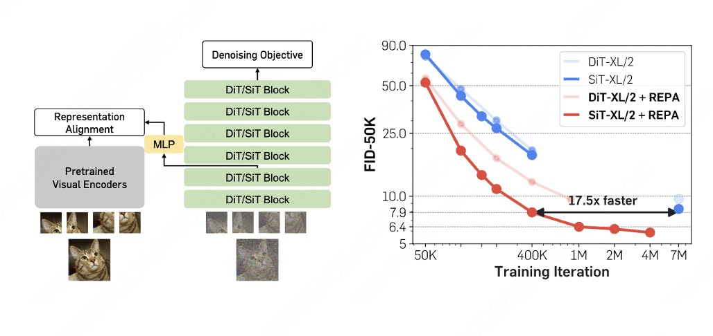
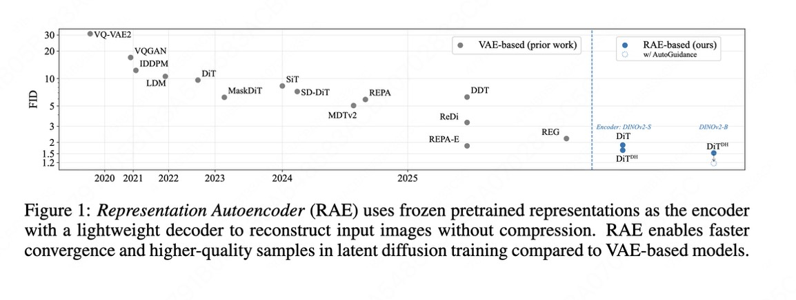
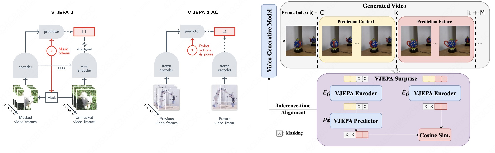
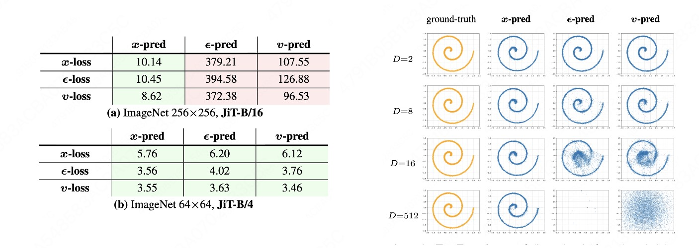
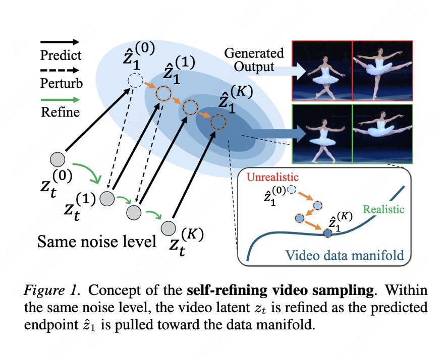

扩散模型与表征&流型学习：有一些因果在五年前就种下
作者：Ruofeng Yang, 杨若峰, PhD candidate SJTU (2022-2027 (Expected))
Interest Area：Diffusion Models (Theory, Image, Video, Post training), DLLM, SSL, RL
虽然一直在玩梗说CV25年就是把扩散模型的中间层或者潜空间和自监督SSL 模型对齐之间度过的，但是玩梗归玩梗，实际静下心来想想其实很多积累在四五年前就已经完成了 (甚至从kaiming 和 saining的MoCO就开始了，感觉这也是为什么两位dalao能够在今年对生成式模型有着如此洞见)。
我自己梳理了一下各类文章的思路每一部分都加了一点点自己的思考，基本上是按照时间顺序从上到下的
(1)从diffusion model的objective 开始说明他自己天然的就是一个SSL 模型，
(2) 到扩散模型的一些理论分析它自身的SSL 模型学习到的表征到底是什么样子，对应了什么特性
(3) 以及自发的diffusion表征为什么不够好，以及为什么我们需要额外的SSL知识注入到表征里面去
(4) 如果我们不注入表征，应该如何通过manifold 知识来改进模型训练与推理
Part 1: 扩散模型和SSL的Objective Function
大家回忆一下，其实diffusion (RF 在这里也算一种不同的schedule的diffusion) 的训练过程中是其实是没有label的 (condition 另算)，所以这类模型天然的就是SSL 模型然后自然是有表征的 (第二部分会说明这个表征有什么作用) 。
更加有趣或者说更加清楚的是Consistency Models的objective function，可以看到，
-
CT的objective function 其实很明显是具备了和之前图片自监督学习SimSiam 或者BYOL 非常类似的两边encoder一边stop gradient的方式，其实隐式的在学习数据表征。
-
与此同时，我们也关注到consistency models 其实是在input x (image) output x (image)。 通过我们对于JiT的认知，其实consistency model 从某种角度上来看是在通过自监督的方式学习数据流型，降低训练难度 以达到最终的单步生成的效果。
Part 2: 扩散模型本身的SSL 表征
上述提及了扩散模型自己在训练过程就在学习表征了。扩散模型中间层的训练结果可以作为下游任务的表征，而且效果还不错，看起来一切ok，但是有没有可能有一些时候diffusion的表征被学习坏了呢？ 我借用Qing Qu 老师组里面两篇很有意思的可解释性文章说明，扩散模型的好表征不是那么好学习的[1] [2]：
- 第一个work说的是，如果模型不具备泛化性，其优秀的表征 （随扩散时间的单峰动力学）就会逐步消失，陷入局部的记忆模式中去。

- 第二个work 说的是，如果不好好训练diffusion，扩散模型学习到的表征完全就是spiky的，只有比较好的扩散模型才能学习到比较balanced 的特征, 充分挖掘到数据分布的特征，具备比较良好的泛化性

[1] Understanding Representation Dynamics of Diffusion Models via Low-Dimensional Modeling
[2] Generalization of Diffusion Models Arises with a Balanced Representation Space
Part 3: 为什么额外的SSL 表征是重要的以及如何使用
上面说明了，扩散模型如果能够自发的学习到一个良好的表征，他的泛化性质就会得以保障 ，进而会有比较好的泛化性能。但显然，这个良好的训练过程这个度很难把握，但我们又要一个良好的表征，那我们有没有可能偷偷懒直接用SSL 模型的良好的表征加速训练呢？
有的老师，从VAE level 到latent level 都是有的，从训练到inference 上面都是有的
(a) 从VAE level 方面
- VAVAE [3] 直接从对齐潜在空间表征和SSL (MAE 以及DINOv2)，直接balance好了重建与生成，使得潜在空间有着丰富的语义信息
(b) 从潜在空间 level
由于我们最终是希望扩散模型的表征学的足够好嘛，我们就不要绕远路去调整VAE了，直接将扩散模型的表征和SSL 表征，这就是saining的REPA [4]
或者更加直接我直接在SSL 模型所在的潜空间上进行优化，再训一个轻量化的decoder，这就是RAE[5]。这两类注入的知识都可以显著的提升优化效率
(c) 从推理层面角度
从推理的角度，由于SSL 模型基本上都是在真实图片或者真实视频上面训练的，其真实感或者物理合理性都不是生成的内容可比的，因此我们可以使用其作为guidance 去inference。
在这里，我分享一篇我感觉做的还蛮的的physcial video的工作，其利用V-JEPA2 predict next frame的训练范式的特性，将生成视频和真实视频放在V-JEPA2的表征（流型）上面进行对齐，效果还挺好的[6]
[3] Reconstruction vs. Generation: Taming Optimization Dilemma in Latent Diffusion Models
[4] REPRESENTATION ALIGNMENT FOR GENERATION:DIFFUSION TRANSFORMERSIS EASIER THAN YOU THINK
[5] REPRESENTATION ALIGNMENT FOR GENERATION:DIFFUSION TRANSFORMERSIS EASIER THAN YOU THINK
[6] Inference-time Physics Alignment of Video Generative Models with Latent World Models
Part 4: 如何利用模型的流型结构
上面其实一直是在数据的表征上面做文章，但我们能否直接利用数据自身的流型信息做文章，绕开表征这个概念。由于图像，视频等天然具备低维度结构，我们如果能够直接找到数据流型结构，也应该能够大大提升训练效率
- 我们近期的ICLR 26的工作也证明了，如果VAE manifold 找的足够好，2层神经网络的MoE 架构对于生成ImageNet 级别的数据集来说绰绰有余[7]
[7] Multi-Subspace Multi-Modal Modeling for Diffusion Models: Estimation, Convergence and Mixture of Experts
-
另外一系列非常有意思的工作或者想法是kaiming的x pred，如果数据有低维度流行结构，那预测低维度x 肯定会比预测全空间vector 或者噪声更加的直接，也会导致更加优秀的结果 (JiT [8] 以及一系列pixel space的优秀工作)
 -
与此同时，还有一些工作在video 上观测到在inference time 反复预测数据流型predict perturb 会逐渐locailize到真实数据流型，也是一个非常直接有用的方法[9]

[8] Back to Basics: Let Denoising Generative Models Denoise
[9] Self-Refining Video Sampling
Summary:
总的而言，今年diffusion 生成领域对于数据的处理脱离比较粗暴的方式，开始充分利用数据的特性和先验进行训练。但是对于这些数据结构的构造和设计都还比较的roughly，感觉还是有一定work的空间的，也欢迎大家与我进行交流讨论！